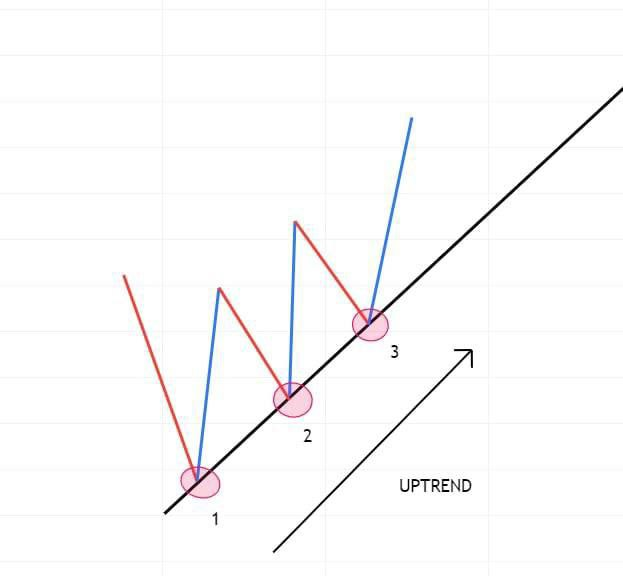

CANDLE STICKS
OHLC ?
What is OHLC? This term is always used by pro traders. OHLC stands for Open, High, Low and Close. The use of OHLC is to view and illustrate price movements in financial markets such as in forex as well as stocks. Each vertical line shows the open price, then the highest price then the lowest price and finally the closing price according to time or timeframe. So that brings us fully to candlesticks
What is a candlesticks?
Candlestick is a tool or a way of Communicating Information about how price is moving
A candlestick conveys The open price, close price, Highest price and lowest price of a forex Market
Just before we dive into the various Types of Candlesticks
I have to introduce you to some Abbreviation and Terminologies used in Trading because we will use them as well as we Proceed in this Training
- Bears : Sellers
- Bull : Buyers
- Bearish Market : Selling Market
- Bullish Market : Buying Market
- Short : To place a sell order
- Long : To place a buy order
- TP : Take Profit
- SL : Stop loss
- TL : Trend line
- HH : Higher High
- LL : Lower Low
- LH : Lower high
- MA : Moving Average
- RSI : Relative Strength Index
We have quite a number of Candle sticks and they are all explained in the Candle stick Material But then I will be Teaching you the Major Types of Candlesticks that are mostly looked out for in Charts during Trading
They are :- Hammer
- Hanging Man
- Doji(dragonfly and gravestone)
- Shooting star
- Bullish Engulfing
- Bearish Engulfing
- Three White Soldiers
- Three Black Crows
- Tweezer Patterns
I will explain the candlesticks under three subheadings :
> Structure and Identification
> Ideology behind its formation
> How to trade it

Hammer
Structure and Identification
A “hammer” is a candlestick with a small body (a small range from open to
close), a long wick protruding below the body, and little to no wick above
The wick must be atleast two times the length of the body
It is usually found at the end or bottom of a downtrend or bearish Market
Implication
When a hammer appears at the bottom of a downtrend, its long wick implies
an unsuccessful effort by bears to push price down, and a corresponding
effort by bulls to step in and push price back up quickly before the period
closed.
How to trade
: A hammer signifies a potential bullish reversal
Look for a hammer at the bottom of a downtrend, wait for the next candle formed after the candlestick to close above the high of the hammer that is a confirmation to go long
A stoploss is to be placed below the low of the hammer
Do not worry on what a stop loss is, that will be explained when we get to Technical analysis

Hanging Man
The “hanging man” is the name given to a candle that is identical in shape
to the hammer; the difference is that while hammers occur in downtrends,
the hanging man pattern occurs at the top of uptrends.
It is often the first sign that
the uptrend is exhausting, and bears are stepping in to create a reversal.
For the reversal signal to be confirmed, the consequent bearish bar should
reach the “neckline” established by the open of the bullish bar on the
other side of the hanging man
Doji
Structure and Identification
Looks like a Cross which is the star Doji candlestick
A “long-legged doji” has long wicks in both directions, implying strong,
balanced pressure from both buyers and sellers.
This candle has zero or almost zero range between its open and close.
Ideology and Implication
Rather than implying potential reversal or the clear dominance of either bears
or bulls, these candles suggest indecision or balance between the two forces.
Neither buyers nor sellers are fully in control.
A doji that occurs in the context
of a strong trend implies the weakening of the dominant force that resulted in
that trend.
How to trade
Basically You stay out of the Market when you see this candle stick
You can only trade when you see the Dragonfly or Gravestone doji
Dragonfly Doji
Structure and Identification
Looks like a letter "T"
The opening, highest and closing prices are the same
Has no real body but long wick or shadow
Found at a proceeding downtrend
Ideology and Implication
When the Market opens the bears drag the price all the way down
But the Bulls come in strongly and push price fully back to its opening level resulting in a long wick
How to trade
Look for the Dragonfly Doji at the bottom of a downtrend
Wait for the next candle formed to close above the opening of the dragofly doji to confirm a Bullish strength
Go long and place stop loss below the Dragonfly Doji
Gravestone Doji
Structure and Identification
Looks like an inverted letter "T"
The opening, highest and closing prices are the same
Has no real body but long wick or shadow above
Found at a proceeding upTrend
Ideology and Implication
When the Market opens the bulls drag the price all the way up
But the Bears come in strongly and push price fully back to its opening level resulting in a long wick
How to trade
Look for the gravestone Doji at the top of an uptrend
Wait for the next candle formed to close below the opening of the gravestone doji to confirm a Bearish strength and reversal
Go short and place stop loss above the gravestone Doji
Shooting Star
Structure and Identification
This candlestick is simply the inversion of the hanging man and similar to the gravestone doji, only difference is, this has a body gravestone doesn't, it has a small
body and a long wick protruding above it, with little to no wick below.
The “shooting star” occurs at the height of an uptrend;
Implications
its long wick implies
that resistance to further bullish movement has been encountered above the
close, and a bearish reversal may be imminent.
How to trade
Look for a shooting star at the top of an uptrend
Wait for the next candle formed to close below the low of the shooting star, This is a confirmation to go short
Place stoploss above the Shooting star candlestick
Tweezer bottom
Structure and Identification
A red candle immediately followed by a green candle longer, shorter or having the same length
But both of them must have same low prices
Occurs at the bottom of a down Trend
Implications
It shows a sudden switch over of Market force from the sellers to the buyers
The point of having the same lows could be regarded as a short term support
How to trade
Look for Tweezer bottom at the end of a down trend, Wait for the next candlestick to close above the high of two previous candlestick which indicates a strong bullish force
Open a long position
Place stop-loss below the lows of the Tweezer candle sticks
Tweezer Top
Structure and Identification
A green candle immediately followed by a red candle longer, shorter or having the same length
But both of them must have same high prices or levels
Occurs at the Top of a down Trend
Implications
It shows a sudden switch over of Market force from the buyers to the sellers
The point of having the same highs could be regarded as a short term Resistance
How to trade
Look for Tweezer bottom at the end of a down trend, Wait for the next candlestick to close above the high of two previous candlestick which indicates a strong bullish force
Open a long position
Place stop-loss below the lows of the Tweezer candle sticks
Trend and TrendLines

Market Structure (Trend upward or downward)
A trader needs to know how to identify trends, your trading career is highly dependent on your ability to identify market trends, when the market is uptrend, when the market is downtrend or when the market moves sideways.
UP Trend
When the market is moving in an uptrend, the market will always make new higher highs and higher lows.
DOWN Trend
When the market is in a downtrend, the market will make new lows and higher lows.
HH - Higher High HL - Higher Low
LL - Lower Low
LH - Lower High
As seen in the photo, please read slowly to understand.. when the price of a market goes higher in price than it previously went.. That is called higher High, and Higher Highs will in most cases form a higher low that is when the current low is higher than the previous low
Aswell when the price of a market goes lower in price than it previously went.. The Tops are called Lower Highs and the bottoms are called Lower lows
A Trendline is line that touches 3 Or more Higher Lows or Lower Highs
When a Trendline Touches three or more Lower Highs we say the Market is in a DownTrend
When a Trendline Touches three or more Higherlows we say the Market is in an UpTrend